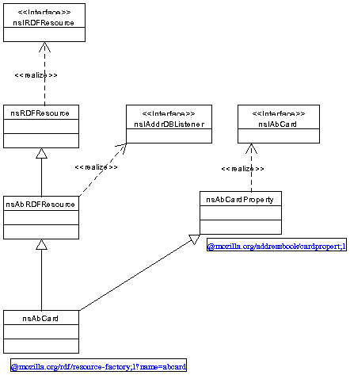
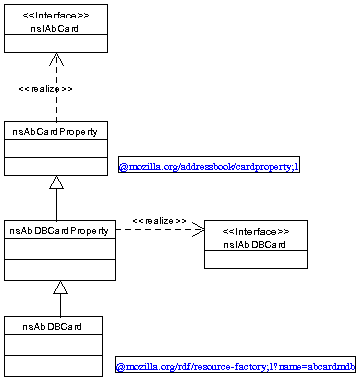
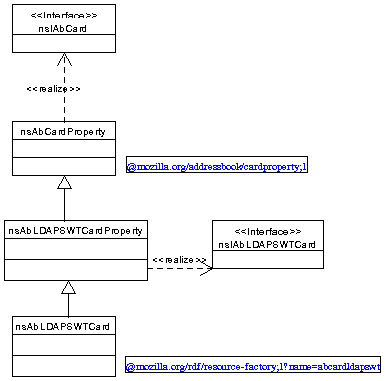

Modifying Mozilla Address Book Code
This document explains the process underway to modify the existing code of the Mozilla address book to enable support many types of address book.
Currently the address book implementation only supports one type of address book which utilizes the Mork database infrastructure for storage of address book data. Functionality associated with database is reflected in the design and implementation of address book interfaces, components implementing the interfaces and clients, such as the java script, which use the components.
The address book interfaces and component framework needs to be redesigned such that it is not dependent on one particular implementation of a specific address book type.
Concentration has currently been focused on two key areas:
- Address book directory
- Address book card
which relate to the content of an address book that are composed of:
- RDF datasource
- Consists of statements or assertions relating resources to each other via an arc or semantic link (can be considered a property).
- RDF resources
- Uniquely defined by a URI. RDF resources are instantiated items of content.
- Specific interfaces corresponding to content, and implementations of
- An RDF resource implements specific interfaces associated with the content the resource represent. Thus an RDF datasource can perform specific operations on a resource to define statements.
These correspond to three XPCOM components:
- RDF datasource component
- RDF resource component
- Specific property component
Card
If we concentrate on the Address book card area there is an:
- Card RDF datasource XPCOM component
- Instantiating class:
nsAbCardDataSource- Registry string:
@mozilla.org/rdf/datasource;1?name=addresscard - Registry string:
- Card RDF resource XPCOM component
- Instantiating class:
nsAbCard- Registry string:
@mozilla.org/rdf/resource-factory;1?name=abcard - Registry string:
- Card property XPCOM component
- Instantiating class:
nsAbCardProperty - Registry string:
@mozilla.org/addressbook/cardproperty;1
When examining the address book code it became apparent that the latter two parts of content required a closer look. The structure of these components are closely related as can be seen when looking at the class diagram:

The components are identified by the note underneath the class, which presents the registry name. The card property component is instantiated when a new card is created which is then 'inserted' in the directory. The card is not associated with an RDF resource until it is 'inserted'.
On the left had side is the path to the nsIRDFResource
interface and on the right is the path to the specific nsIAbCard
interface. The latter has specific attributes and methods.
It immediately becomes apparent that the left hand side structure
contains specifics about data bases because of the nsIAddrDBListener
inteface. A Card RDF resource component listens to the corresponding
database, defined by the nsIAddrDatabase interface, where
the card is stored so that the component may update if changes occur.
On the right hand side the nsAbCardProperty class
implements all the methods and attributes associated with the
nsIAbCard interface. The nsIAbCard interface
contains attributes and methods specific to data base functionality:
readonly attribute unsigned long key;void setRecordKey(in unsigned long key);attribute unsigned long dbTableID;attribute unsigned long dbRowID;void setAbDatabase(in nsIAddrDatabase database);void copyCard(in nsIAbCard srcCard);readonly attribute string cardURI;
For different address book types it should be necessary that:
- An instantiated card property component is independent of the address book implementation
- Address book implementations should not have to deal to data base specific methods which may not not have any relation to how the implementation behaves
It was decided that the right hand side required 'refactoring' into general and specific attributes and methods:

Specific methods from the original nsIAbCard interface were
moved to a new interface called nsIAbDBCard interface.
Implementing methods were then moved accordingly. The
nsAbCardProperty class implements some methods associated with
the nsIAbCard interface. This is now defined to be the card
property component and is capable of supporting all the required
functionality for creating a new card via the Javacript and XUL GUI.
Specific database methods are now implemented by the
nsAbDBCardProperty class. The nsAbDBCard class
contains the same content as the previous nsAbCard class and
the implementation of the nsIRDFResource interface has not changed.
Only the registry string has changed from ?name=abcard
to ?name=abcardmdb. The implications of this are that every
database card RDF resource component instantiate will have a URI scheme
abcardmdb. An example URI may look like
abcardmdb://abook.mab/Card1. Thus cards originating from the
Mozilla address book database are uniquely defined as before.
The consequences of the 'refactoring' are perhaps not as simplistic as
previously described. It was necessary to add a new attribute to the
nsIAbCard interface for mail list support and modify some
other existing interfaces to support the functionality to add a new card to
a directory. In addition code which depended on specific methods in the old
nsIAbCard interface required modifiction to query the component
for the nsIAbDBCard interface. Since this was only required by
code related to database functionality this operation was guaranteed to be
successful.
Overall the 'refactoring' resulted in minimal changes to existing code and its functionality. No changes were required to the corresponding data source.
Given the new arrangement it is easy to represent cards associated with the LDAP star web top address book:

The same pattern as before is literally copied. However, it may not be
necessary to be as exact. There may be no need for the
nsAbLDAPSWTCardProperty class or a specific card interface
nsIAbLDAPSWTCard. It is a requirement that the
nsAbLDAPSWTCard class implement the nsIRDFResource
interface, via inheritance of the nsRDFResource class, and
that it has a uniquely defined registry name conforming to the RDF resource
factory schema. In this case all LDAP SWT card RDF resource components will
have a URI scheme of abcardldapswt.
Directory
The same pattern for 'refactoring' the card may be applied to the directory component framework. This is currently underway such that it should straightforward to implement different directory implementations without needing different RDF directory data sources.
Managing multiple address book types
Once the framework is in place for managing multiple address book types
it is necessary to instantiate address books from preferences, create new
address books and delete address books (updating the preferences). This
currently assumes that an address book, which corresponds to an directory
RDF resource is of a singular type abdirectory, now that there
are multiple types, for example abdirectorymdb and
abdirectoryldapswt, it is necessary to change the previous
behaviour.
The code associated with the directory component manages the instantiation
of address books and preferences. This code needs to be moved into a new
directory component in the new framework. This component will use the existing
abdirectory URI scheme. This is like a boot strap component with
limited functionality and only makes sense when instantiate with a URI of
abdirectory://. In XUL files RDF data sources are bound to an RDF
resource to obtain an entry into the graph of statements. Since the URI scheme
has not changed the XUL needs no modification.
For the instantiation of address books there appears to be a requirement for each directory type to have a corresponding factory component that has a singular create method and takes a set of properties as a parameter. This then disassociates how the preferences are stored from the address book. Currently they are quite tightly bound.
There is a requirement to ensure that the existing method of storing preferences is suitable for future implementations of address books.
Each address book type may require a separate GUI dialog to allow the user to create a new address book of that type.
LDAP address books
Two types of LDAP address book have been identified:
-
Star Webtop LDAP address book
Behaviour wise this is equivalent to local address books and corresponds to a users personal address book. -
Personnel LDAP address book
Behaviour wise this is equivalent to Netscape 4.x LDAP address books. A query based approach is required to efficiently return a constrained sub-set of address book cards.
It is considered that the former can easily be integrated into the redesigned framework, albeit with some possible inefficiencies which are related to auto completion of email addresses. These inefficiencies relate to how the address book is queried. Thus it appears that both require some additional interface for query support.
The latter will require more changes to the environment to support GUI based queries. However, the concept of a directory and card need not change, so it should be possible to drag a card from a personnel address book into a personal address book. Additional attributes will need to be added to the directory to indicate query and read only operations.
Both require LDAP client code to communicate the LDAP protocol. Mozilla contains an LDAP C SDK and corresponding XPCOM components which use this SDK. The LDAP address book implementations should ideally use the XPCOM components. It needs to be ensured that these meet the requirements.
Note that the Star Webtop LDAP address book is of a higher priority. The changes to the existing framework will enable easier integration of the personnel LDAP address book. It does not imply that the engineers on the address book project will implement this address book type.
Multiple data sources
It remains to be seen if there are any caveats to the approach of having mulitple data resource types and a singular data source. The only concern of current note is the efficient use of the directory interfaces by the singular data source. If this becomes a problem it should be possible to extend components to support additional functionality and:
- modify the singular data source to support multiple directory functionality.
- create new directory data sources for specific address book types which conform to the existing directory data source schema. A top level composite data source will be required to aggregate the multiple data sources.
Multiple sub-directories
Currently the hierarchy of the address book structure is limited to a maximum depth of three:
- multiple address books
- address book
- mail list
This may require extending to one more depth to support the concept of address book folders. Otherwise multiple address books of the same type will have to be instantiated which represent each folder.
It is uncertain what modification are required to the address book to support this behaviour. However a 'mail list' is a sub directory of a certain type, so it should be possible (theoretically) to support sub-directories that are not mail lists.
Plan
Framework
- Refactor directory framework to enable multiple directory implementations.
- Refactor modified directory framework to enable boot strap component. All preference saving code will be in here.
-
Modify bootstrap component to instantiate address book types from
corresponding factory components. This ensures that directory implementations
are de-coupled from the preferences. This will require modification to the
nsIAbDirectoryinterface to remove some associated attributes and methods.
Star Webtop LDAP address book
- Ensure that LDAP C SDK and XPCOM components are suitable
-
Decide on
vCardorinetOrgPersonschema to be used in the LDAP server. Mozilla uses a similar schema toinetOrgPerson. I would prefer ifvCardwas used throughout the Mozilla address book framework, however this will result in many changes to code. Thus for now it is better to leave it as is. This implies, from a developer perspective, that it would be better for the LDAP server to useinetOrgPersonsince it is simpler for the LDAP address components to directly map the attributes. - Implement read only functionality
- Implement update functionality, delete and new.
- Implement mail list functionality. This may require additional schema in the LDAP directory.